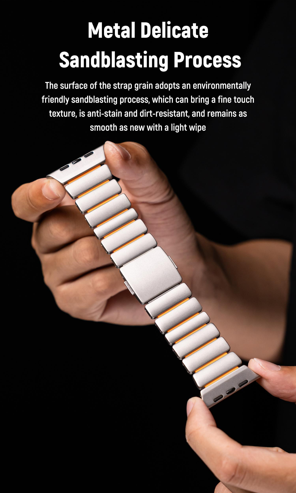
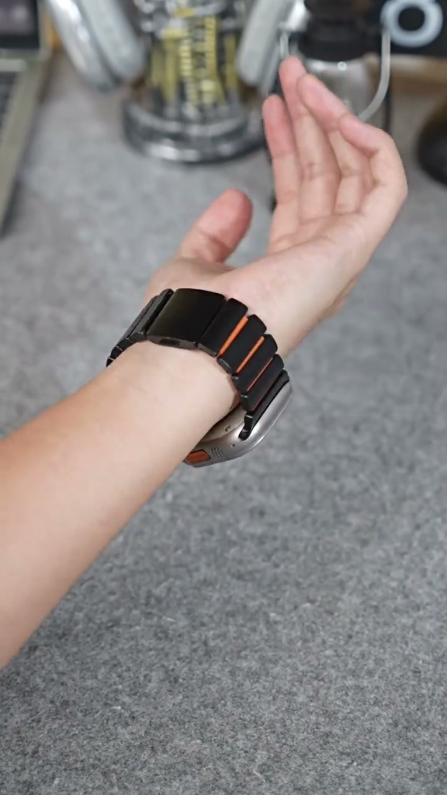
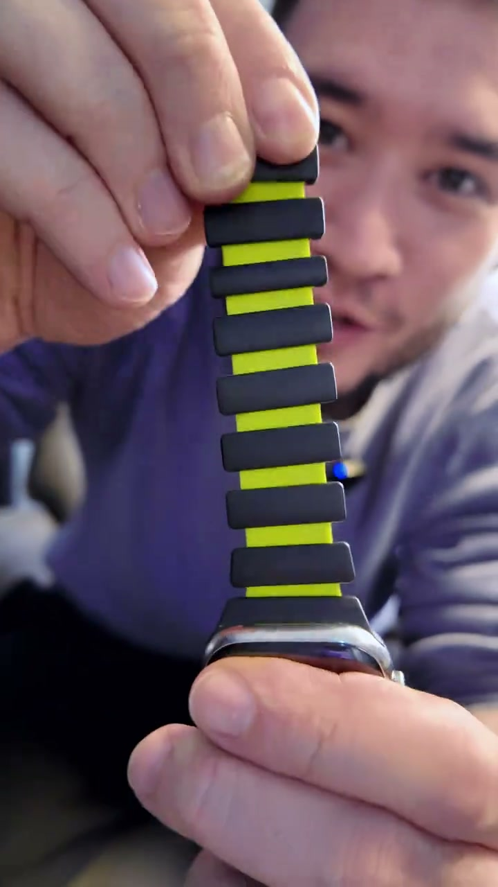
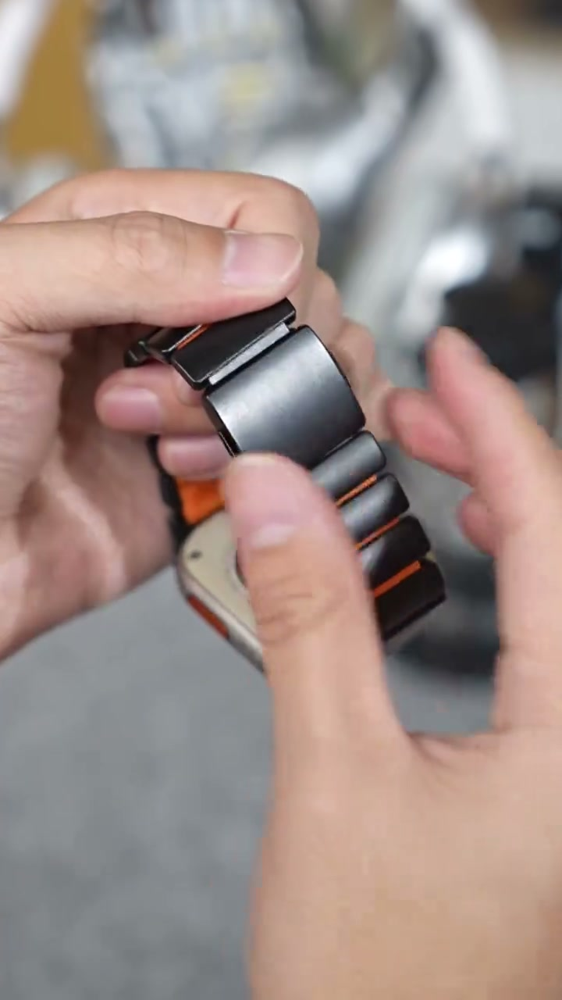
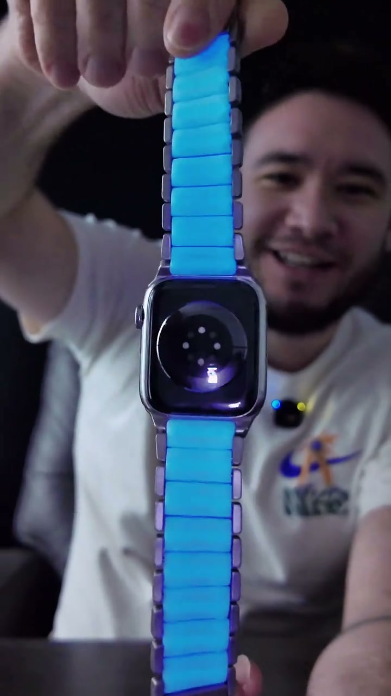

Creator Collaboration Brief
Make the Watch Look New Without Replacing It
Lead with the visible transformation, then prove the contrast between the polished outer links and the soft, flexible inner layer.

Key Selling Points
Light-Activated Glow Effect (luminous variant only)For the shot, shine a bright light on the inner layer, then cut to a dim scene to reveal the blue glow. Sell the surprise of “it lights up after exposure,” without promising an exact glow duration.
Metal Look, Soft Silicone InsideShow the link-style metal exterior, then flip the band to reveal the soft silicone inner layer. Make the “premium outside, comfortable inside” design instantly clear.
Quick Magnetic AdjustmentUse a clean close-up to capture the clasp snapping together and the fit being adjusted with one hand. This is the most satisfying retention shot.
Secondary Benefits
Flexible Wrist FitGently bend the band on camera and explain that the silicone inner layer helps with adjustment and cushioning. Compared with a regular steel band, it bends more easily and follows the wrist more naturally.
Instant Style UpgradeShow how replacing a basic band immediately gives the whole watch a more polished look for work, casual plans, outdoor use, and daily outfits.
Easy to StylePair it with a T-shirt, jacket, activewear, or a smart-casual look to expand the use cases and reasons to buy.
How to film the first 3 seconds
Use movement, material contrast, and a glowing visual before explanation. The viewer should understand the upgrade with the sound off.
1. Show the wrist resultOpen on the finished fit and rotate the wrist naturally. Say: “Wait... this made my watch look way more expensive.”

2. Reveal the material contrastShow the metal-look exterior, then flip to the silicone inner layer. Say: “Outside looks premium, inside feels soft on the wrist.”

3. Snap the magnetic claspFilm the magnetic ends moving together and closing automatically. Say: “The magnetic clasp is honestly so satisfying.”

4. Introduce the glowing materialDim the scene and lift the band so the blue luminous inner layer fills the frame. Say: “And this glowing inner layer is the detail everyone notices first.”

Content Production Sequence
Build one clear visual argument: ordinary watch, unexpected material contrast, easy fit, upgraded result.
Open with the wrist result
CoreShow the complete worn result immediately—do not begin with an unboxing. Let viewers see the upgrade in the first shot.
Show the metal-look exterior
CoreCapture the link lines, surface texture, and side details to show how it looks more polished than a basic silicone band.
Reveal the soft silicone inside
CoreFlip the band and press the inner layer with a finger to show softness, skin contact, and everyday comfort.
Demonstrate magnetic adjustment
CoreFilm the clasp closing and the fit being adjusted with one hand. Keep the shot clean, close, and continuous.
Show the styled result
CoreRotate the wrist with a work, casual, or outdoor outfit while keeping the band clearly visible.
Finish with an interactive CTA
CoreHold on the worn result and say: “Which color would you wear? Tap the product link to check it out.”
Reference video | Luminous variantUse this for the blue glowing version’s opening rhythm, reveal order, and glow-feature presentation.
Reference video | Non-luminous variantUse this for the standard version’s wrist result, material contrast, and magnetic adjustment shots.
Restricted Wording
You can say
- compatible with Apple Watch
- smart watchband
Do not say
- This is an Apple Watch band
Creator Deliverable Checklist
Deliver one vertical creator-style video with clear close-ups, an immediate visual hook, on-wrist proof, and a direct product-link CTA. The watch/device is not included.
9:16 Vertical20–40 SecondsProduct in First 3sMagnetic Close-UpInner Layer RevealOn-Wrist ResultSpoken CTADevice Not Included